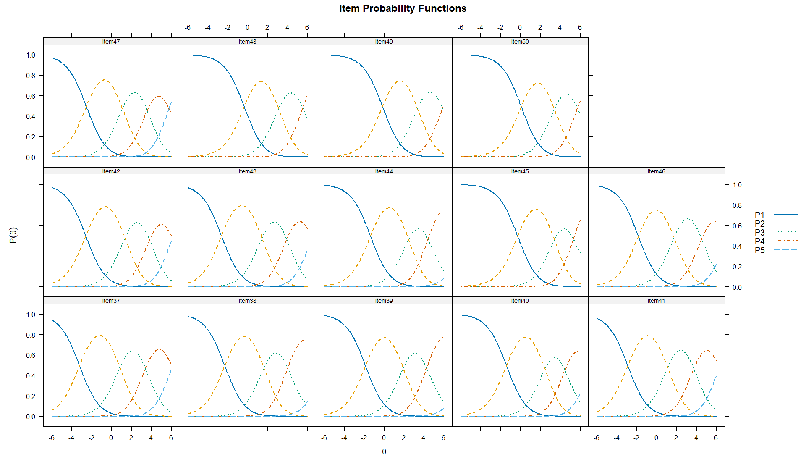
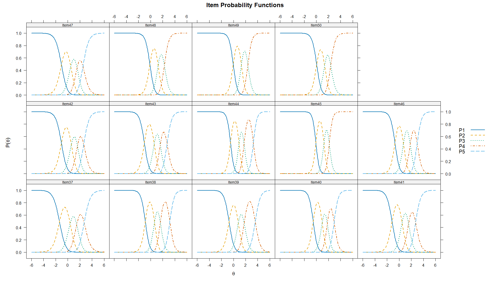
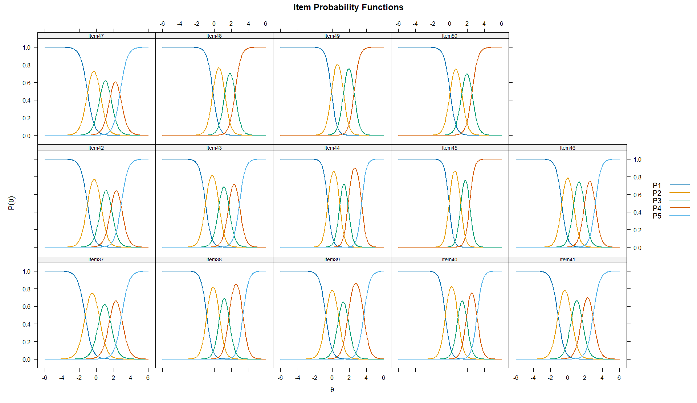
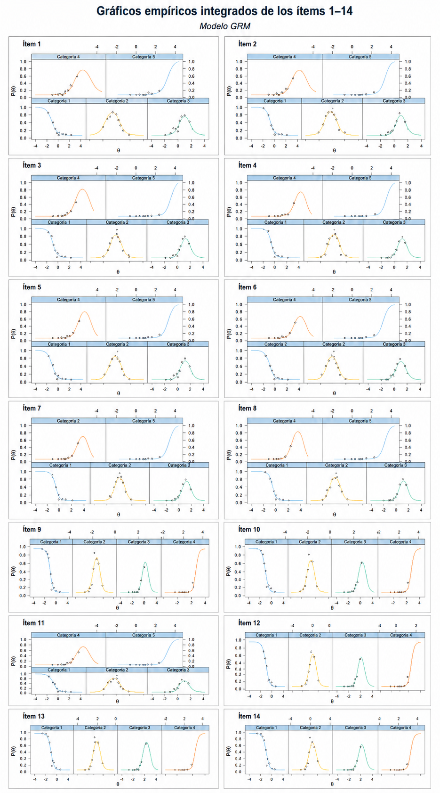
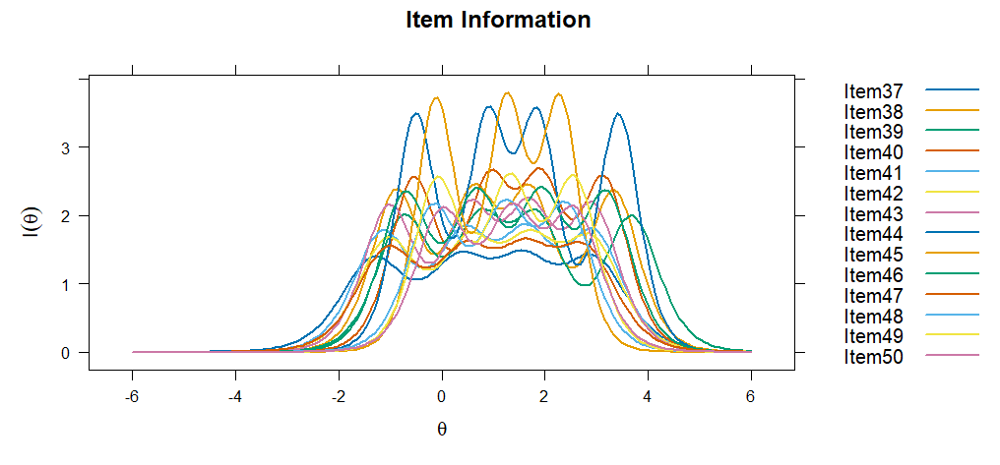
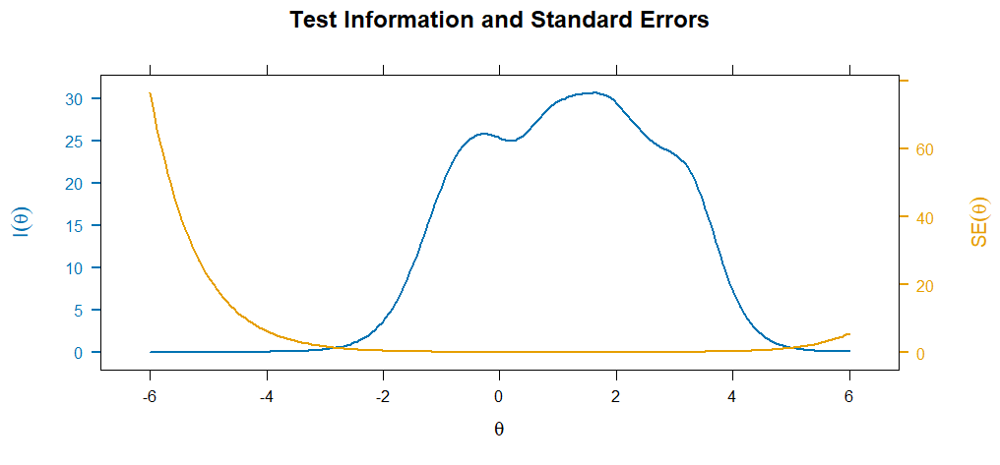
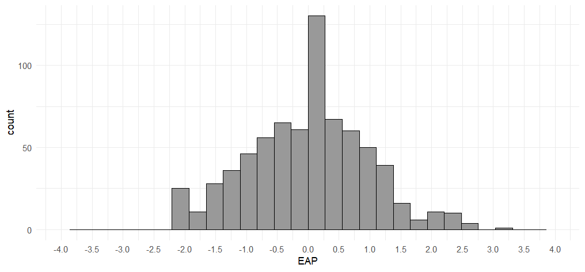
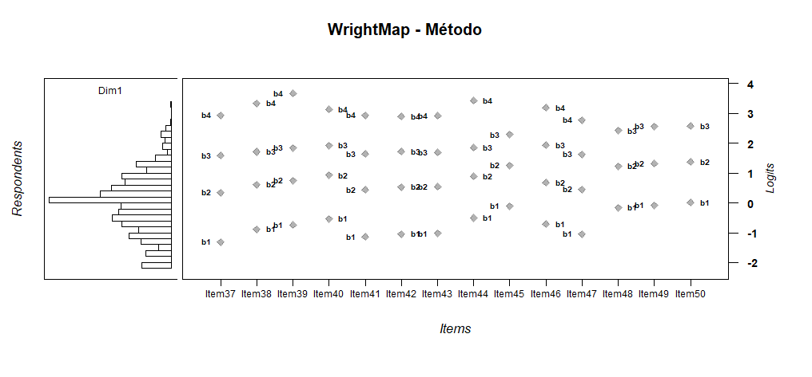
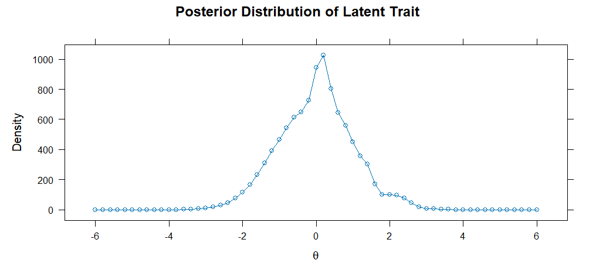

Modelo de Crédito Parcial
Estimación de umbrales del PCM
Los parámetros del PCM para el constructo Método muestran que todos los ítems presentan una discriminación fija de a = 1, propia del modelo Rasch/PCM, por lo que la interpretación se centra en los umbrales de transición entre categorías. En general, los umbrales se ordenan progresivamente (b1 < b2 < b3 < b4), lo que respalda un funcionamiento ordinal adecuado: a mayor nivel del rasgo latente, mayor probabilidad de seleccionar categorías superiores.
Los ítems 37, 41, 42, 43 y 47 presentan umbrales iniciales más bajos, por lo que aportan información en niveles bajos e intermedios del constructo. En cambio, los ítems 38, 39, 40, 44 y 46 muestran umbrales superiores elevados, especialmente en b4, lo que sugiere que alcanzar la categoría más alta requiere niveles altos de habilidad en el constructo Método. Por su parte, los ítems 45, 48, 49 y 50 no presentan estimación para b4, lo cual se relaciona con la baja frecuencia de respuestas en la categoría superior. Sustantivamente, esto puede interpretarse como señal de que dicha categoría representa un nivel de dificultad alto para esta muestra; psicométricamente, indica que no hubo suficiente información empírica para estimar ese umbral de manera estable. En conjunto, los resultados sugieren que los ítems cubren un rango amplio del continuo latente, aunque las categorías superiores son exigentes y en algunos reactivos presentan limitaciones de estimación.
| Item | a | b1 | b2 | b3 | b4 |
|---|---|---|---|---|---|
| Item37 | 1 | -3.204 | 0.846 | 3.417 | 6.109 |
| Item38 | 1 | -2.301 | 1.640 | 4.008 | 7.667 |
| Item39 | 1 | -1.858 | 1.931 | 4.277 | 8.306 |
| Item40 | 1 | -1.384 | 2.482 | 4.488 | 7.026 |
| Item41 | 1 | -2.893 | 1.113 | 3.743 | 6.326 |
| Item42 | 1 | -2.575 | 1.363 | 3.826 | 6.124 |
| Item43 | 1 | -2.632 | 1.442 | 3.922 | 6.452 |
| Item44 | 1 | -1.358 | 2.471 | 4.402 | 8.243 |
| Item45 | 1 | -0.266 | 3.420 | 5.333 | |
| Item46 | 1 | -1.831 | 1.753 | 4.530 | 7.039 |
| Item47 | 1 | -2.520 | 1.107 | 3.599 | 5.782 |
| Item48 | 1 | -0.357 | 3.112 | 5.521 | |
| Item49 | 1 | -0.156 | 3.371 | 5.874 | |
| Item50 | 1 | 0.099 | 3.417 | 5.740 |
Las curvas características del ítem del PCM para el constructo Método muestran, en general, un funcionamiento ordinal adecuado de las categorías de respuesta. La categoría P1 predomina en niveles bajos del rasgo latente, mientras que las categorías P2, P3 y P4 se activan progresivamente conforme aumenta θ. La categoría P5 tiende a aparecer solo en niveles altos del rasgo, lo que indica que la respuesta máxima exige un mayor dominio del constructo.
En varios ítems, especialmente Item45, Item48, Item49 y Item50, la categoría superior muestra una presencia limitada o una activación tardía, lo cual es coherente con la ausencia del umbral b4 observada previamente. Esto sugiere que pocos participantes alcanzaron el nivel necesario para sostener empíricamente esa transición hacia la categoría más alta. En conjunto, las CCI respaldan un funcionamiento progresivo de los reactivos del constructo Método, aunque también muestran que las categorías superiores son más exigentes y, en algunos ítems, cuentan con menor información empírica.

Retrotraducción factorial del PCM
La retrotraducción factorial del PCM para el constructo Método mostró comunalidades elevadas en todos los ítems, con valores de h² = .932 en la mayoría de los reactivos y h² = .911 en los ítems 45, 48, 49 y 50. Esto sugiere que los ítems mantienen una relación fuerte con el rasgo latente. No obstante, al tratarse de un modelo PCM/Rasch con discriminación fija, la homogeneidad de estos valores debe interpretarse con cautela y complementarse con modelos más flexibles, como GPCM o GRM.
Modelo de Crédito Parcial Generalizado
Estimación de parámetros del GPCM
Los parámetros del GPCM para el constructo Método mostraron discriminaciones diferenciadas entre ítems (a = 1.904–3.629), con mayor capacidad discriminativa en los ítems 45, 44, 49, 40 y 38. Los umbrales se ordenaron progresivamente, lo que respalda el funcionamiento ordinal de las categorías de respuesta. No obstante, en los ítems 45, 48, 49 y 50 no se estimó b4, lo cual se relaciona con la baja frecuencia de respuestas en la categoría superior y sugiere que dicha categoría representa un nivel alto de dificultad para esta muestra. En conjunto, el GPCM indica que los ítems del constructo Método funcionan adecuadamente, aunque algunos reactivos presentan menor información empírica en la categoría más alta.
| a | b1 | b2 | b3 | b4 | Item |
|---|---|---|---|---|---|
| 1.903604 | -1.3651 | 0.40123 | 1.482873 | 2.707102 | Item37 |
| 2.798768 | -0.882 | 0.655485 | 1.616533 | 3.179111 | Item38 |
| 2.407008 | -0.72994 | 0.804721 | 1.768159 | 3.600932 | Item39 |
| 2.81687 | -0.51762 | 0.980795 | 1.81733 | 2.941876 | Item40 |
| 2.284476 | -1.17056 | 0.482296 | 1.559001 | 2.708414 | Item41 |
| 2.171192 | -1.04939 | 0.595995 | 1.608893 | 2.638564 | Item42 |
| 2.527946 | -1.03631 | 0.597338 | 1.601704 | 2.719614 | Item43 |
| 3.41104 | -0.48689 | 0.9288 | 1.755488 | 3.290519 | Item44 |
| 3.629673 | -0.07516 | 1.275497 | 2.143229 | Item45 | |
| 2.688726 | -0.70229 | 0.710228 | 1.83313 | 2.970637 | Item46 |
| 2.00105 | -1.04243 | 0.500548 | 1.543881 | 2.507805 | Item47 |
| 2.637254 | -0.11993 | 1.253908 | 2.280118 | Item48 | |
| 2.962944 | -0.03992 | 1.321232 | 2.393836 | Item49 | |
| 2.59733 | 0.059982 | 1.382092 | 2.384805 | Item50 |
Las CCI del GPCM para el constructo Método muestran un funcionamiento ordinal adecuado de las categorías de respuesta: la categoría P1 predomina en niveles bajos de θ, las categorías intermedias se activan de forma progresiva y las categorías superiores aparecen en niveles más altos del rasgo. A diferencia del PCM, el GPCM permite observar curvas más pronunciadas en algunos reactivos, especialmente en ítems con mayor discriminación como Item45, Item44, Item49, Item40 y Item38, lo que indica mayor capacidad para diferenciar niveles cercanos del constructo. En los ítems 45, 48, 49 y 50, la categoría superior se activa en zonas altas del continuo y con menor estabilidad empírica, lo que es coherente con la ausencia del umbral b4 y con la baja frecuencia de respuestas máximas. En conjunto, las curvas respaldan el funcionamiento progresivo del constructo Método, aunque confirman que las categorías más altas son exigentes para esta muestra.
| a | b1 | b2 | b3 | b4 | Item |
|---|---|---|---|---|---|
| 1.904 | -1.365 | 0.401 | 1.483 | 2.707 | Item37 |
| 2.799 | -0.882 | 0.655 | 1.617 | 3.179 | Item38 |
| 2.407 | -0.730 | 0.805 | 1.768 | 3.601 | Item39 |
| 2.817 | -0.518 | 0.981 | 1.817 | 2.942 | Item40 |
| 2.284 | -1.171 | 0.482 | 1.559 | 2.708 | Item41 |
| 2.171 | -1.049 | 0.596 | 1.609 | 2.639 | Item42 |
| 2.528 | -1.036 | 0.597 | 1.602 | 2.720 | Item43 |
| 3.411 | -0.487 | 0.929 | 1.755 | 3.291 | Item44 |
| 3.630 | -0.075 | 1.275 | 2.143 | - | Item45 |
| 2.689 | -0.702 | 0.710 | 1.833 | 2.971 | Item46 |
| 2.001 | -1.042 | 0.501 | 1.544 | 2.508 | Item47 |
| 2.637 | -0.120 | 1.254 | 2.280 | - | Item48 |
| 2.963 | -0.040 | 1.321 | 2.394 | - | Item49 |
| 2.597 | 0.060 | 1.382 | 2.385 | - | Item50 |

Retrotraducción factorial del Modelo GPCM
La retrotraducción factorial del GPCM para el constructo Método mostró cargas factoriales muy elevadas en todos los ítems (λ = .946–.982), así como comunalidades altas (h² = .895–.965). Esto indica que los reactivos se asocian fuertemente con el factor latente y que una proporción importante de su varianza es explicada por el constructo. Los ítems con mayores cargas fueron Item44 (λ = .982), Item45 (λ = .979), Item38 e Item40 (λ = .974), mientras que el valor más bajo correspondió al Item37 (λ = .946), aunque todavía en un rango claramente adecuado. En conjunto, los resultados respaldan una estructura unidimensional fuerte y coherente para el constructo Método bajo el GPCM.
| Item | F1 | h2 |
|---|---|---|
| Item37 | 0.946 | 0.895 |
| Item38 | 0.974 | 0.948 |
| Item39 | 0.965 | 0.932 |
| Item40 | 0.974 | 0.949 |
| Item41 | 0.962 | 0.925 |
| Item42 | 0.958 | 0.917 |
| Item43 | 0.968 | 0.938 |
| Item44 | 0.982 | 0.965 |
| Item45 | 0.979 | 0.959 |
| Item46 | 0.972 | 0.944 |
| Item47 | 0.951 | 0.904 |
| Item48 | 0.962 | 0.925 |
| Item49 | 0.969 | 0.939 |
| Item50 | 0.960 | 0.922 |
Modelo de Respuesta Graduada
Estimación de parámetros del GRM
Los parámetros del GRM para el constructo Método muestran discriminaciones elevadas en todos los ítems (a = 2.343–3.855), lo que indica que los reactivos distinguen adecuadamente entre distintos niveles del rasgo latente. Los ítems con mayor capacidad discriminativa fueron Item45 (a = 3.855), Item44 (a = 3.732), Item40 (a = 3.189), Item49 (a = 3.188) e Item38 (a = 3.075). Los umbrales se ordenaron progresivamente, lo que respalda el funcionamiento ordinal de las categorías de respuesta. Sin embargo, en los ítems 45, 48, 49 y 50 no se estimó b4, lo cual se relaciona con la baja frecuencia de respuestas en la categoría superior y sugiere que dicha categoría representa un nivel alto de dificultad para esta muestra. En conjunto, el GRM indica un funcionamiento adecuado de los ítems del constructo Método, con alta capacidad discriminativa y mayor exigencia en las categorías superiores.
| a | b1 | b2 | b3 | b4 | Item |
|---|---|---|---|---|---|
| 2.343 | -1.315 | 0.343 | 1.582 | 2.942 | Item37 |
| 3.075 | -0.882 | 0.611 | 1.713 | 3.337 | Item38 |
| 2.819 | -0.736 | 0.749 | 1.844 | 3.675 | Item39 |
| 3.189 | -0.538 | 0.925 | 1.919 | 3.141 | Item40 |
| 2.653 | -1.143 | 0.434 | 1.641 | 2.940 | Item41 |
| 2.573 | -1.047 | 0.534 | 1.719 | 2.902 | Item42 |
| 2.926 | -1.021 | 0.544 | 1.692 | 2.923 | Item43 |
| 3.732 | -0.505 | 0.889 | 1.855 | 3.427 | Item44 |
| 3.855 | -0.112 | 1.254 | 2.288 | - | Item45 |
| 3.051 | -0.713 | 0.677 | 1.928 | 3.191 | Item46 |
| 2.461 | -1.043 | 0.455 | 1.630 | 2.774 | Item47 |
| 2.924 | -0.163 | 1.226 | 2.424 | - | Item48 |
| 3.188 | -0.082 | 1.322 | 2.562 | - | Item49 |
| 2.883 | 0.006 | 1.368 | 2.570 | - | Item50 |
Las CCI del GRM para el constructo Método muestran un funcionamiento ordinal adecuado de las categorías de respuesta. En general, la categoría P1 predomina en niveles bajos de θ, las categorías intermedias se activan de manera progresiva y las categorías superiores aparecen en niveles más altos del rasgo latente. Las curvas son pronunciadas en varios ítems, especialmente en Item45, Item44, Item40, Item49 e Item38, lo que coincide con sus altas discriminaciones y sugiere buena capacidad para diferenciar niveles cercanos del constructo. En los ítems 45, 48, 49 y 50, la categoría superior se activa en niveles altos del continuo y no presenta una curva separada de P5 como en otros ítems, lo cual es coherente con la ausencia de b4 y con la baja frecuencia de respuestas máximas. En conjunto, las CCI respaldan el funcionamiento progresivo y discriminativo de los reactivos del constructo Método, aunque confirman que las categorías superiores son más exigentes y menos frecuentes en esta muestra.

Retrotraducción factorial del GRM
La retrotraducción factorial del GRM para el constructo Método mostró cargas factoriales elevadas en todos los ítems (λ = .809–.915), lo que indica una asociación consistente de los reactivos con el factor latente. Las comunalidades también fueron adecuadas y altas (h² = .655–.837), lo que sugiere que una proporción importante de la varianza de los ítems es explicada por el constructo. Los ítems con mayores cargas fueron Item45 (λ = .915), Item44 (λ = .910), Item40 e Item49 (λ = .882), mientras que el valor más bajo correspondió al Item37 (λ = .809), todavía en un rango adecuado. Además, la varianza explicada por el factor fue elevada (74.7%). En conjunto, estos resultados respaldan una estructura predominantemente unidimensional y coherente para el constructo Método bajo el GRM.
| Item | F1 | h2 |
|---|---|---|
| Item37 | 0.809 | 0.655 |
| Item38 | 0.875 | 0.765 |
| Item39 | 0.856 | 0.733 |
| Item40 | 0.882 | 0.778 |
| Item41 | 0.842 | 0.708 |
| Item42 | 0.834 | 0.696 |
| Item43 | 0.864 | 0.747 |
| Item44 | 0.910 | 0.828 |
| Item45 | 0.915 | 0.837 |
| Item46 | 0.873 | 0.763 |
| Item47 | 0.822 | 0.676 |
| Item48 | 0.864 | 0.747 |
| Item49 | 0.882 | 0.778 |
| Item50 | 0.861 | 0.742 |
Unidimensionalidad del constructo mediante AFC
La unidimensionalidad del constructo Método se evaluó inicialmente mediante AFC ordinal con estimador WLSMV. En primer lugar, el SRMR = .078 se ubicó por debajo del punto de referencia convencional de .08, lo que indica una discrepancia residual aceptable entre la matriz observada y la reproducida por el modelo; por tanto, este índice aporta evidencia favorable de unidimensionalidad esencial. Además, los índices incrementales escalados fueron adecuados (CFI = .960; TLI = .952), y las cargas factoriales estandarizadas fueron elevadas en todos los ítems (λ = .814–.944), lo que muestra una asociación clara de los reactivos con el factor latente. No obstante, el RMSEA fue elevado en sus distintas versiones, por lo que el ajuste global no puede considerarse plenamente satisfactorio. En conjunto, los resultados respaldan una estructura predominantemente unidimensional y defendible para continuar con el análisis TRI, aunque con posibles discrepancias residuales o subcomponentes internos que conviene revisar posteriormente. Asimismo, los índices de modificación sugieren asociaciones residuales importantes entre algunos pares de ítems, especialmente Item37–Item38, Item39–Item40, Item49–Item50, Item46–Item47 e Item48–Item49, lo que podría indicar redundancia conceptual o la presencia de subcomponentes internos dentro del constructo Método.
Los índices de ajuste TRI mediante M2 mostraron resultados mixtos para el constructo Método. El PCM presentó el RMSEA más bajo (.157) y el TLI más alto (.937), aunque mostró mayor error residual (SRMSR = .080). En cambio, los modelos flexibles presentaron mejor ajuste residual, especialmente el GRM, con el SRMSR más bajo (.067), seguido muy de cerca por el GPCM (.068). El GPCM obtuvo el CFI más alto (.938), mientras que el GRM presentó los mejores criterios de información, con los valores más bajos de AIC, SABIC y BIC, además del mayor logLik. La comparación entre PCM y GPCM fue significativa (X² = 97.015, gl = 13, p < .001), lo que indica mejora al permitir discriminaciones diferenciadas. En conjunto, aunque el GPCM mostró un CFI ligeramente superior, los criterios comparativos respaldan al GRM como el modelo con mejor ajuste relativo para el constructo Método.
| Modelo | M2 | gl | p | RMSEA | IC 95% RMSEA | SRMSR | TLI | CFI | AIC | SABIC | BIC | LogLik |
|---|---|---|---|---|---|---|---|---|---|---|---|---|
| PCM | 1692.760 | 90 | .000 | .157 | [.151, .164] | .080 | .937 | .937 | 16517.44 | 16591.99 | 16760.28 | -8205.719 |
| GPCM | 1649.395 | 77 | .000 | .168 | [.161, .175] | .068 | .927 | .938 | 16446.42 | 16539.27 | 16748.84 | -8157.211 |
| GRM | 1729.123 | 77 | .000 | .173 | [.165, .179] | .067 | .924 | .935 | 16302.74 | 16395.58 | 16605.15 | -8085.369 |
Independencia local del modelo GRM
La independencia local del modelo GRM para el constructo Método se evaluó mediante LD de Chen y Thissen (1997) y Q3 de Yen (1984). En el análisis LD, varios pares superaron el punto de referencia de 10.83; sin embargo, la interpretación se centró en las correlaciones residuales estandarizadas del triángulo superior, reportadas por mirt como coeficientes V de Cramer con signo. Bajo los criterios de Cohen (1988), la mayoría de las asociaciones fueron pequeñas, ya que se ubicaron por debajo de .30 en valor absoluto. Solo algunos pares alcanzaron magnitudes ligeramente superiores a ese punto de referencia, principalmente Item39–Item43 (r = -.337) e Item40–Item43 (r = -.313), lo que sugiere dependencias residuales específicas, pero no generalizadas.
Por su parte, el Q3 mostró posibles asociaciones locales en varios pares, especialmente Item49–Item50 (Q3 = .479), Item48–Item49 (Q3 = .473), Item39–Item40 (Q3 = .407), Item37–Item38 (Q3 = .381), Item41–Item49 (Q3 = -.364), Item41–Item45 (Q3 = -.330), Item43–Item49 (Q3 = -.329), Item41–Item50 (Q3 = -.313), Item38–Item48 (Q3 = -.304) e Item46–Item47 (Q3 = .304), todos superiores a |Q3| > .2236. En conjunto, los resultados sugieren que la independencia local no se cumple plenamente en todos los pares de ítems; sin embargo, las asociaciones se concentran en pares específicos, especialmente entre ítems conceptualmente próximos, por lo que deben interpretarse como posibles redundancias o subcomponentes internos del constructo Método, más que como un problema generalizado del modelo.
Ajuste al ítem del modelo GRM
El ajuste al ítem del modelo GRM para el constructo Método fue generalmente adecuado. Los valores de outfit (.776–.993) e infit (.864–.987) se ubicaron en rangos aceptables y cercanos al valor esperado de 1, lo que indica ausencia de desajuste práctico severo. Aunque algunos ítems presentaron valores significativos en S_X2 o X2*, los valores de RMSEA.S_X2 fueron bajos en todos los casos (.008–.039), lo que sugiere que las discrepancias observadas son de magnitud reducida. Los ítems 37, 42, 48, 49 y 50 mostraron significancia en S_X2, y algunos reactivos también fueron señalados por X2*, especialmente Item37, Item41, Item43, Item44, Item45, Item46, Item47, Item48 y Item50. No obstante, estas señales no se acompañan de valores problemáticos en infit u outfit. En conjunto, los resultados respaldan un ajuste aceptable de los ítems del constructo Método al GRM, con señales puntuales de revisión, pero sin evidencia suficiente para justificar la eliminación de reactivos.
| item | Zh | outfit | z.outfit | infit | z.infit | S_X2 | df.S_X2 | RMSEA.S_X2 | p.S_X2 | X2_star | p.X2_star |
|---|---|---|---|---|---|---|---|---|---|---|---|
| Item37 | 1.049 | 0.993 | -0.100 | 0.968 | -0.521 | 89.239 | 48 | 0.0345 | 0.0003 | 92.5286 | 0.006 |
| Item38 | 1.420 | 0.883 | -1.549 | 0.918 | -1.366 | 62.368 | 37 | 0.0308 | 0.0056 | 21.3420 | 0.196 |
| Item39 | 1.141 | 0.918 | -1.020 | 0.965 | -0.553 | 53.238 | 39 | 0.0225 | 0.0639 | 35.2635 | 0.0498 |
| Item40 | 1.244 | 0.874 | -1.109 | 0.939 | -0.926 | 34.442 | 33 | 0.0078 | 0.3986 | 28.3452 | 0.1036 |
| Item41 | 1.273 | 0.939 | -0.960 | 0.928 | -1.213 | 54.338 | 43 | 0.0191 | 0.1151 | 41.1047 | 0.032 |
| Item42 | 1.073 | 0.942 | -0.869 | 0.959 | -0.660 | 86.708 | 43 | 0.0375 | 0.0001 | 26.6888 | 0.1188 |
| Item43 | 1.253 | 0.959 | -0.580 | 0.966 | -0.546 | 51.281 | 37 | 0.0231 | 0.0594 | 55.8025 | 0.0208 |
| Item44 | 1.443 | 0.862 | -0.868 | 0.924 | -1.179 | 48.107 | 33 | 0.0252 | 0.0434 | 43.8717 | 0.0434 |
| Item45 | 1.781 | 0.880 | -0.644 | 0.864 | -2.263 | 46.023 | 27 | 0.0313 | 0.0127 | 47.2250 | 0.0122 |
| Item46 | 1.284 | 0.885 | -1.334 | 0.951 | -0.795 | 56.661 | 35 | 0.0293 | 0.0117 | 40.9853 | 0.0432 |
| Item47 | 1.036 | 0.977 | -0.339 | 0.987 | -0.196 | 61.104 | 47 | 0.0204 | 0.0811 | 46.3544 | 0.0236 |
| Item48 | 1.287 | 0.848 | -0.952 | 0.916 | -1.379 | 66.492 | 36 | 0.0343 | 0.0015 | 29.4902 | 0.0422 |
| Item49 | 1.413 | 0.787 | -1.339 | 0.930 | -1.148 | 61.270 | 33 | 0.0345 | 0.0020 | 28.0105 | 0.0546 |
| Item50 | 1.306 | 0.776 | -1.300 | 0.947 | -0.850 | 79.740 | 38 | 0.0390 | 0.0001 | 42.6002 | 0.017 |
Los gráficos empíricos de ajuste del modelo GRM para el constructo Método muestran, en general, una correspondencia adecuada entre las curvas teóricas y los puntos observados. En la mayoría de los ítems, las categorías de respuesta siguen un patrón ordinal esperado: las categorías bajas predominan en niveles bajos de θ, las categorías intermedias se concentran en zonas medias y las categorías superiores aumentan conforme se incrementa el rasgo latente. Esto respalda visualmente el funcionamiento progresivo de los reactivos.
No obstante, en algunos ítems se observan desviaciones puntuales entre los puntos empíricos y las curvas ajustadas, especialmente en las categorías superiores, lo cual es coherente con la baja frecuencia de respuestas máximas detectada previamente en algunos reactivos. Estas discrepancias no parecen comprometer el ajuste general del modelo, pero sí sugieren revisar con cautela los ítems donde las categorías altas tienen menor respaldo empírico. En conjunto, la evaluación visual indica un ajuste empírico aceptable de los ítems del constructo Método al modelo GRM, con señales puntuales de revisión, pero sin evidencia suficiente para eliminar reactivos.

Ajuste por persona
El ajuste por persona del modelo GRM para el constructo Método permitió identificar patrones de respuesta con mayor desviación respecto a lo esperado por el modelo. Los casos con valores más extremos de Zh presentaron combinaciones heterogéneas de respuestas, es decir, puntuaciones altas en algunos reactivos y bajas en otros dentro del mismo constructo. Este comportamiento se reflejó en valores elevados de outfit e infit, lo que sugiere cierto desajuste individual entre el patrón observado y el patrón esperado por el modelo. Sin embargo, estos resultados no implican necesariamente respuestas inválidas ni justifican la exclusión automática de casos. Dado que el constructo Método integra habilidades específicas relacionadas con el diseño metodológico, los tipos de estudio, los procedimientos de investigación y la selección de técnicas, es posible que algunos participantes reporten mayor dominio en ciertos aspectos y menor dominio en otros. Por tanto, los resultados del ajuste por persona deben interpretarse como evidencia diagnóstica exploratoria sobre patrones atípicos de respuesta, y no como un criterio automático para depurar la base de datos.
| Caso | 37 | 38 | 39 | 40 | 41 | 42 | 43 | 44 | 45 | 46 | 47 | 48 | 49 | 50 | Outfit | z_outfit | Infit | z_infit | Zh |
|---|---|---|---|---|---|---|---|---|---|---|---|---|---|---|---|---|---|---|---|
| 153 | 5 | 4 | 1 | 1 | 3 | 5 | 5 | 3 | 1 | 3 | 3 | 1 | 1 | 1 | 6.402 | 5.80 | 6.75 | 6.45 | -10.95 |
| 197 | 2 | 4 | 1 | 1 | 1 | 4 | 4 | 4 | 2 | 1 | 4 | 1 | 1 | 1 | 7.490 | 6.18 | 6.57 | 5.84 | -9.95 |
| 419 | 4 | 3 | 4 | 3 | 5 | 4 | 5 | 1 | 1 | 3 | 3 | 2 | 1 | 1 | 4.411 | 4.91 | 4.25 | 4.71 | -8.66 |
| 165 | 5 | 3 | 3 | 2 | 2 | 3 | 2 | 2 | 2 | 5 | 5 | 1 | 1 | 1 | 4.675 | 4.59 | 5.33 | 5.44 | -6.80 |
| 651 | 3 | 4 | 4 | 2 | 3 | 2 | 3 | 1 | 3 | 4 | 4 | 2 | 4 | 1 | 3.133 | 3.68 | 2.90 | 3.35 | -5.68 |
| 15 | 3 | 3 | 4 | 3 | 2 | 4 | 3 | 3 | 2 | 1 | 1 | 1 | 1 | 1 | 3.366 | 3.42 | 3.47 | 3.75 | -5.65 |
| 492 | 3 | 4 | 1 | 2 | 3 | 4 | 3 | 1 | 1 | 1 | 3 | 1 | 1 | 1 | 4.319 | 4.17 | 3.98 | 3.97 | -5.60 |
| 490 | 2 | 2 | 1 | 1 | 1 | 2 | 5 | 2 | 2 | 3 | 4 | 1 | 2 | 1 | 5.026 | 4.67 | 4.75 | 4.59 | -5.55 |
| 509 | 3 | 3 | 1 | 1 | 3 | 1 | 1 | 3 | 1 | 1 | 1 | 1 | 1 | 1 | 2.731 | 2.70 | 3.08 | 3.46 | -5.44 |
| 356 | 1 | 1 | 2 | 2 | 4 | 3 | 2 | 1 | 1 | 2 | 4 | 3 | 1 | 1 | 3.768 | 3.77 | 4.04 | 4.05 | -5.34 |
Curva de información del ítem (IIF)
La curva de información del ítem del modelo GRM para el constructo Método muestra que los reactivos aportan mayor precisión en un rango amplio del continuo latente, aproximadamente entre θ = -1.5 y θ = 3.5. Los ítems con mayor aporte informativo fueron aquellos con discriminaciones más elevadas, principalmente Item45 (a1 = 3.855), Item44 (a1 = 3.732), Item40 (a1 = 3.189), Item49 (a1 = 3.188), Item38 (a1 = 3.075) e Item46 (a1 = 3.051). Esto indica que dichos reactivos son especialmente útiles para diferenciar participantes con niveles cercanos del rasgo latente. En contraste, los ítems Item37 (a1 = 2.343) e Item47 (a1 = 2.461) aportan menor información relativa, aunque mantienen una discriminación adecuada. En conjunto, los resultados sugieren que los ítems del constructo Método ofrecen mayor precisión en niveles bajos-medios, medios y medio-altos del rasgo, mientras que la información disminuye en los extremos del continuo, especialmente por debajo de θ = -2.5 y por encima de θ = 4.
| Item | a1 | d1 | d2 | d3 | d4 |
|---|---|---|---|---|---|
| Item37 | 2.343 | 3.081 | -0.803 | -3.708 | -6.894 |
| Item38 | 3.075 | 2.711 | -1.879 | -5.266 | -10.261 |
| Item39 | 2.819 | 2.074 | -2.11 | -5.199 | -10.36 |
| Item40 | 3.189 | 1.716 | -2.95 | -6.119 | -10.018 |
| Item41 | 2.653 | 3.032 | -1.152 | -4.353 | -7.798 |
| Item42 | 2.573 | 2.695 | -1.374 | -4.425 | -7.467 |
| Item43 | 2.926 | 2.988 | -1.593 | -4.952 | -8.554 |
| Item44 | 3.732 | 1.886 | -3.318 | -6.924 | -12.79 |
| Item45 | 3.855 | 0.43 | -4.832 | -8.819 | |
| Item46 | 3.051 | 2.175 | -2.067 | -5.881 | -9.736 |
| Item47 | 2.461 | 2.567 | -1.119 | -4.011 | -6.828 |
| Item48 | 2.924 | 0.476 | -3.584 | -7.086 | |
| Item49 | 3.188 | 0.26 | -4.214 | -8.169 | |
| Item50 | 2.883 | -0.018 | -3.945 | -7.411 |

Curva de información del test (TIF) y Curva de error estándar (SEC)
La curva de información del test del modelo GRM para el constructo Método muestra que el instrumento alcanza su mayor precisión en un rango amplio del rasgo latente, aproximadamente entre θ = -1 y θ = 3.5. En esta zona, la información del test es elevada y el error estándar de medición se mantiene bajo, lo que indica que el modelo estima con mayor precisión a los participantes con niveles bajos-medios, medios y medio-altos del constructo. La información disminuye en los extremos del continuo, especialmente por debajo de θ = -2.5 y por encima de θ = 4.5, donde el error estándar aumenta. En conjunto, la TIF y la SEC indican que el constructo Método presenta buena precisión de medida en la zona central y media-alta del rasgo, pero menor precisión para participantes con niveles extremadamente bajos o altos.

Estimación referencial de habilidades latentes
Una vez calibrado el modelo GRM del constructo Método, se estimaron de manera referencial las habilidades latentes de los participantes mediante el método EAP. Para fines descriptivos, estas habilidades se clasificaron mediante un baremo teórico de la escala θ: muy bajo (θ < -2), básico (-2 ≤ θ < -1), intermedio bajo (-1 ≤ θ < -0.5), intermedio (-0.5 ≤ θ ≤ 0.5), intermedio alto (0.5 < θ ≤ 1), bueno (1 < θ ≤ 1.5) y avanzado (θ > 1.5). Esta clasificación debe interpretarse como una aproximación descriptiva del modelo calibrado, no como una clasificación diagnóstica definitiva.
Las habilidades latentes estimadas mediante EAP se distribuyeron alrededor del centro de la escala θ, con una media cercana a cero (M = 0.000) y una dispersión próxima a una unidad estándar (DE = 0.976). El error estándar promedio fue moderado-bajo (M_SE = 0.214), lo que sugiere una precisión adecuada en la estimación de las puntuaciones latentes. En términos descriptivos, la mayor proporción de participantes se ubicó en el nivel intermedio (40.9%), seguida de los niveles intermedio alto (15.1%), intermedio bajo (13.7%) y básico (13.2%). Una proporción menor se concentró en los niveles bueno (8.3%), avanzado (5.4%) y muy bajo (3.5%). En conjunto, los resultados sugieren que el modelo organiza principalmente a los participantes en niveles intermedios del constructo Método, con menor presencia de perfiles extremos.
| n | Media θ | DE θ | Mínimo θ | Máximo θ | Media SE | Muy bajo | Básico | Intermedio bajo | Intermedio | Intermedio alto | Bueno | Avanzado |
|---|---|---|---|---|---|---|---|---|---|---|---|---|
| 722 | 0.000 | 0.976 | -2.07 | 3.29 | 0.214 | 25 (3.5%) | 95 (13.2%) | 99 (13.7%) | 295 (40.9%) | 109 (15.1%) | 60 (8.3%) | 39 (5.4%) |

Distribución posterior del rasgo latente
La distribución posterior del rasgo latente para el constructo Método muestra una forma aproximadamente unimodal y centrada alrededor de θ = 0, lo que indica que la mayor concentración de participantes se ubica en niveles medios del constructo. La densidad disminuye progresivamente hacia los extremos del continuo, con menor presencia de participantes en niveles muy bajos o muy altos. Se observa una ligera asimetría hacia valores positivos, lo que sugiere algunos casos con niveles medio-altos de habilidad, aunque la mayoría permanece alrededor del centro de la escala. En conjunto, la distribución posterior es coherente con las estimaciónes EAP reportadas previamente y confirma que el modelo organiza principalmente a los participantes en niveles intermedios del constructo Método, con menor presencia de perfiles extremos.
Evaluación del ajuste persona-ítem mediante Wright Map

